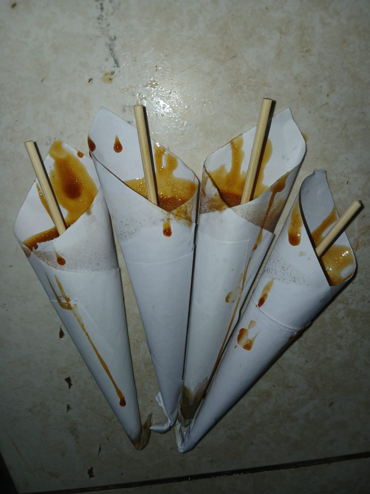
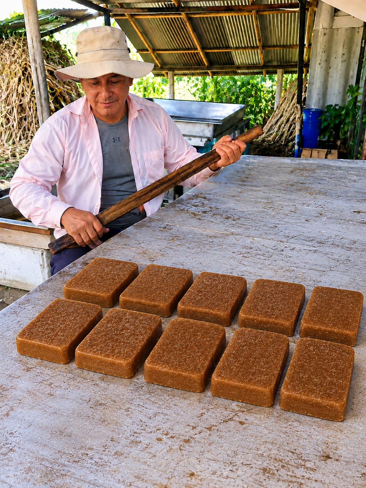

Tradición de Baures
Tradición de BauresMiel de caña
Dulce, espesa y llena de carácter. Se cocina lentamente hasta alcanzar ese punto que convierte cada cucharada en un sabor de casa.
Conoce su proceso ↗De la caña que crece en nuestra tierra nacen sabores auténticos, preparados con dedicación y orgullo por las tradiciones de nuestro pueblo.
En Baures, Beni, la caña de azúcar es más que un cultivo: es el comienzo de un proceso hecho con manos trabajadoras y saberes compartidos. En Dulce Innovación celebramos cada etapa, desde el cañal hasta la miel lista para disfrutar.
Productos que llevan el carácter de nuestra tierra y el cuidado de quienes la trabajan.
Tradición de BauresDulce, espesa y llena de carácter. Se cocina lentamente hasta alcanzar ese punto que convierte cada cucharada en un sabor de casa.
Conoce su proceso ↗ Recién molida
Recién molidaLa frescura de la caña recién molida, con el dulzor natural de nuestra cosecha y todo el sabor del campo.
Así comienza todo ↗ Hecho a mano
Hecho a manoEl conocimiento que pasa de mano en mano y mantiene vivo un oficio que forma parte de la identidad de Baures.
Del campo al fuego ↗
Dulce artesanalUn dulce de miel de caña, preparado y servido en su característico envoltorio.
Mira cómo se prepara ↗
Tradición localUna preparación tradicional elaborada con dedicación en nuestro trapiche.
Conoce nuestros sabores ↗
Cada producto empieza mucho antes de llegar a tu mesa. Cultivamos, cosechamos y transformamos la caña siguiendo un proceso artesanal donde la paciencia y la experiencia son parte de la receta.
Un recorrido por el trabajo de nuestra gente: desde el cañal y la cosecha, pasando por la molienda, hasta la miel lista para envasar. Reproduce los videos aquí mismo.


Encuentra nuestras novedades y acompáñanos en Facebook.